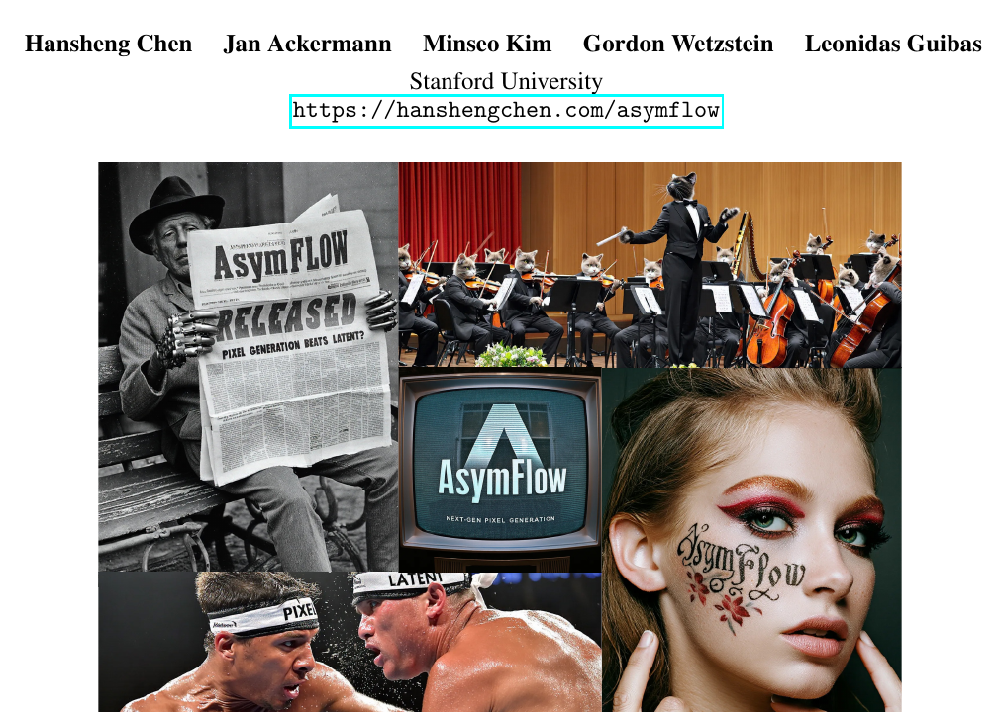
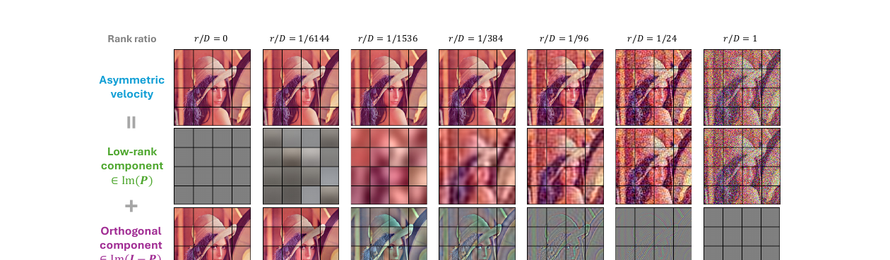
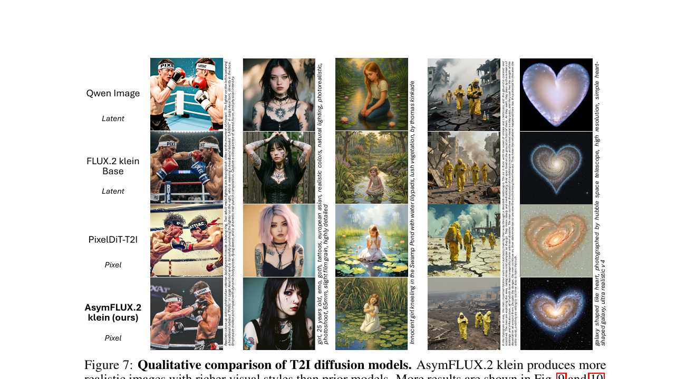

AsymFlow:
用秩-非对称速度参数化, 把 latent 流匹配模型微调到像素空间

1. 出发点 (Motivation)
2025-2026 的 pixel-space diffusion 复兴 (JiT、PixelGen、PixNerd、DeCo、PixelDiT、DiP、L2P) 都在攻击同一个观察: VAE 是有损的, latent 扩散的细节天花板被 decoder 卡死。所以社区开始问: 既然 plain DiT 已经 scale 到 9B+ 参数, 能不能直接在像素上用?
但直接把 DiT 塞像素有一个具体的技术障碍, 论文 §1 讲得很清楚:
"Velocity target $u = \boldsymbol\epsilon - \mathbf x_0$ requires predicting a high-dimensional noise component in addition to structured data. ... per-patch noise dimension can pollute the network's internal states, creating a bottleneck."
翻成大白话: 在像素空间, 一个 16×16×3 = 768 维的 patch token 里, 一半是要被 transformer 内部表示和传递的高斯白噪声。但 transformer 的 hidden state 是有限带宽 (e.g., 1280 维), 你逼它"既要学语义结构, 又要在 hidden 里携带 768 维白噪声", 就会爆。U-Net 用 skip connection 让噪声"从 input 短路到 output"绕过这个瓶颈; plain transformer 没有 skip, 撞墙。
历史上社区有两条退路, AsymFlow 都不满意:
- $x_0$-prediction (JiT、PixelGen、PixelREPA): 直接让网络预测干净图 $\hat{\mathbf x}_0$, 然后用 $\hat u = (\mathbf x_t - \hat{\mathbf x}_0) / \sigma_t$ 换算 velocity。$\sigma_t \to 0$ 时分母趋零, 数值不稳, low-noise 阶段质量崩 (JiT 论文里也承认)。
- 架构改造 (U-ViT、PixNerd、PixelDiT、DDT 的 decoder head): 在 plain transformer 上加 skip/decoder head 让噪声有路径短路。能 work, 但破坏了 plain DiT 的简洁性, 也不太方便复用 latent DiT 的预训练权重。
AsymFlow 的赌注: 不改架构, 不改 training/sampling 协议, 只改 velocity 的参数化目标 — 把 noise 部分限制到 patch 内的低秩子空间。两个好处一次拿到:
- (a) 减少 transformer 内部要传递的"噪声维度", 缓解 bottleneck;
- (b) 提供一条 新 路径: 把 pretrained latent flow 通过子空间对齐, 一键 lift 成一个 rank-$d$ 的像素 flow, 然后微调闭合精度 gap。这条路径之前不存在 — 别人想从 latent 模型出发做像素生成, 要么从头再训 (PixelDiT-T2I 就是这条路), 要么在 latent 上加 detailer (L2P 是这条路)。AsymFlow 给出了第三条。
2. 方法 (Method) — 高中生友好 + 数学严谨
核心思想 (类比)
想象你是个画家, 任务是从一张被白噪声覆盖的画布逐步"擦掉噪声"还原一幅清晰画作。标准 flow matching 要你预测一个"擦除方向"向量, 这个向量同时编码 (a) 画作内容 和 (b) 噪声形状。在低维 latent 空间这不难, 因为画作和噪声的总维度都不算大。但跳到全像素 (768 维 per patch), 你的大脑 (transformer hidden state) 同时要在 working memory 里塞下 整张画的几何 和 每个像素的噪声值, 装不下, 内部表示开始打架。
AsymFlow 的招: 把"噪声形状"那部分降维, 只让你预测噪声在某 8 个"重要方向"上的投影。剩余 760 个方向的噪声怎么办? — 不让你预测, 直接从 $\mathbf x_t$ 里减出来 (因为 $\mathbf x_t = \alpha_t \mathbf x_0 + \sigma_t \boldsymbol\epsilon$, 知道 $\mathbf x_0$ 和 $\mathbf x_t$ 就能反推 $\boldsymbol\epsilon$)。
"8 个重要方向"是哪 8 个? — PCA 选出来的、自然图像 patch 上方差最大的 8 个方向 (从头训用); 或者把预训练 latent 空间通过 Procrustes 对齐"提升"到像素空间的 8/128/d 个方向 (微调用)。这两种构造让网络只需要在"语义相关的低秩子空间"里学 $u$-prediction, 在"高频纯噪声方向"上自动退化为 $x_0$-prediction (后者不要求网络精确预测噪声, 只要求预测干净数据)。
2.1 Flow Matching 基础 (Eq. 1–2)
记 $\mathbf x_0 \in \mathbb R^D$ 是干净数据, $\boldsymbol\epsilon \sim \mathcal N(0, \mathbf I)$。线性 flow 调度: $\alpha_t = 1-t,\ \sigma_t = t,\ t \in (0,1]$:
$$\mathbf x_t := \alpha_t \mathbf x_0 + \sigma_t \boldsymbol\epsilon$$ODE 速度目标 (条件后验均值 → 用样本速度做 unbiased estimator):
$$u := \frac{\mathbf x_t - \mathbf x_0}{\sigma_t} = \boldsymbol\epsilon - \mathbf x_0 \tag{1}$$—— 翻译: velocity 就是从干净指向噪声的向量。学一个网络 $\hat u = G_\theta(\mathbf x_t, t)$ 来逼近它。
Flow matching loss:
$$\mathcal L_{\text{FM}} = \mathbb E_{t, \mathbf x_0, \boldsymbol\epsilon} \big[ \| u - \hat u \|^2 \big] \tag{2}$$关键问题: $u$ 里包含 $\boldsymbol\epsilon$ — 一个 $D$ 维白噪声。在像素空间 $D$ 很大 (768/patch), 这部分占用了网络内部 features 大量带宽, 而它本应能从输入 $\mathbf x_t$ 里"读出"。
2.2 非对称速度 (Eq. 3)
设 $A \in \mathbb R^{D \times r}$ 是 rank-$r$ 子空间的正交基 ($A^\top A = I_r$), $P := AA^\top$ 是对应的正交投影矩阵。$\text{Im}(P)$ 是 rank-$r$ 子空间, $\text{Im}(I-P)$ 是其正交补。
AsymFlow 把要预测的目标改成非对称速度:
$$u_A := P\boldsymbol\epsilon - \mathbf x_0 \tag{3}$$—— 翻译: 噪声项 $\boldsymbol\epsilon$ 被替换成它在 $r$ 维子空间上的投影 $P\boldsymbol\epsilon$ (维度从 $D$ 降到 $r$ 的有效自由度), 数据项 $-\mathbf x_0$ 保持 full-rank。训练时网络输出 $\hat u_A = G_\theta(\mathbf x_t, t)$ 来拟合这个 $u_A$。
核心好处: 网络 hidden state 不再需要把 $D$ 维噪声"端到端"传递, 只需要保留 $r$ 维的有意义信息。

2.3 正交分解 + Full-rank 还原 (Eq. 5)
把 $u_A$ 分解到 $\text{Im}(P)$ 和 $\text{Im}(I-P)$:
$$Pu_A = P\boldsymbol\epsilon - P\mathbf x_0 = Pu, \qquad (I-P)u_A = -(I-P)\mathbf x_0 \tag{4}$$—— 翻译: 在子空间 $\text{Im}(P)$ 内, AsymFlow 就是标准 $u$-prediction; 在正交补 $\text{Im}(I-P)$ 内, AsymFlow 退化成 $x_0$-prediction (符号相反)。这是 Fig. 3 那张"族谱图"的数学根据 — 调 $r$ 就是在两端连续滑动。

full-rank velocity 的还原公式 (Eq. 5):
$$u = Pu_A + (I-P)\frac{\mathbf x_t + u_A}{\sigma_t} \tag{5}$$—— 翻译: 子空间内直接用 $Pu_A$; 正交补内用 $\hat{\mathbf x}_0 = -(I-P)u_A$ 代回 $x_0$-to-$u$ 公式。结果是 full-rank velocity, 可以直接喂进 standard flow matching loss 和 standard ODE/SDE sampler。所以 training/sampling 协议完全不动, 只换了一个 head 的语义。
代码里这个还原逻辑就是 asymflow_velocity 函数:
repo/lakonlab/models/architectures/asymflow/common.py:L42-L72 — 正交分解 + Eq. 5 的实现
@staticmethod
def orthogonal_decomposition(full_rank_state, proj_buffer):
subspace = full_rank_state @ proj_buffer @ proj_buffer.T
complement = full_rank_state - subspace
return subspace, complement
def asymflow_velocity(
self,
u_a_packed,
x_t_packed,
calibration: AsymFlowCalibration):
with torch.autocast(device_type='cuda', dtype=torch.float32, enabled=False):
sigma_min = self.train_sigma_min if self.training else self.sigma_min
u_a_packed = u_a_packed.float()
x_t_packed = x_t_packed.float()
proj_buffer = self.proj_buffer.float()
# orthogonal decomposition
u_a_subspace, u_a_complement = self.orthogonal_decomposition(u_a_packed, proj_buffer)
x_t_subspace, x_t_complement = self.orthogonal_decomposition(x_t_packed, proj_buffer)
# read calibration output
sk = calibration.s * calibration.k
sigma_clamped = calibration.sigma.clamp(min=sigma_min)
# low-rank subspace (Pu_A)
u_subspace = (
sk * u_a_subspace
+ (1 - sk) / sigma_clamped * x_t_subspace
)
# orthogonal complement: (x_t + s * u_A) / sigma_clamped
u_complement = (x_t_complement + calibration.s * u_a_complement) / sigma_clamped
# full velocity
return u_subspace + u_complement对照公式: u_subspace 就是 Eq. 5 的左半 $Pu_A$ (加上 scale calibration 的 $s, k$ 校正项, 见 §2.5 / Appendix A.2), u_complement 就是右半 $(I-P)(\mathbf x_t + u_A)/\sigma_t$。注意 sigma_clamped = max(sigma, sigma_min) 防止低噪声时分母崩 — 但 因为这只发生在正交补里, AsymFlow 比纯 $x_0$-prediction 对 $\sigma_{\min}$ 的依赖小得多 (Table 1: JiT 关掉 clamp FID 从 1.90 掉到 3.27, AsymFlow 只从 1.76 掉到 2.28)。
2.4 子空间怎么选: PCA (from-scratch) vs Procrustes (latent→pixel)
整个机制的"形状"由投影矩阵 $A$ 决定。论文给两种构造:
(a) PCA 子空间 (训练 from scratch)
对训练集 patches 做 Gram 矩阵特征分解, 取 top-$r$ 主方向:
$$X = U\Sigma V^\top, \quad A = U_r, \quad P = AA^\top \tag{8}$$直观: PCA 保留了自然图像 patch 上"方差最大"的 $r$ 个方向 — 这些是低频结构 (光照、色块、整体颜色), 也是 velocity prediction 最需要"精细"控制的部分。剩下 $D-r$ 个方向 (高频纹理、噪声样态) 推到 $x_0$-prediction 通道里, 不要求精确预测。Fig. 5 消融: 同一 rank $r{=}8$, PCA 比 random subspace 好将近 0.4 FID — 子空间的方向比维度更重要。
repo/tools/asymflow_subspace_pca_dit.py:L94-L123 — PCA 子空间构造主函数
def main():
args = parse_args()
cfg = Config.fromfile(args.config)
# ... build dataset, dataloader ...
denoising_cfg = cfg.model.diffusion.denoising
patch_size = denoising_cfg.patch_size
rank = denoising_cfg.base_rank # e.g., 8 for AsymFlow-H/16
torch.set_grad_enabled(False)
pixel_gram = compute_pixel_gram(cfg, args, patch_size, device) # accumulate X^T X
dim = pixel_gram.size(0) # patch dim (e.g., 768 for 16x16x3)
if rank > dim:
raise ValueError(f'Rank {rank} exceeds patch dimension {dim}.')
_, evecs = torch.linalg.eigh(pixel_gram) # eigendecomp, ascending
proj_mat = evecs[:, -rank:].contiguous().float().cpu() # top-r eigenvectors = PCA basis
write_checkpoint_to_file({f'proj_mat_p{patch_size}': proj_mat}, out)(b) Procrustes 子空间 (latent→pixel 微调)
用于把预训练 latent flow 模型 lift 成像素模型。设 $Z \in \mathbb R^{d \times N}$ 是 latent token, $X \in \mathbb R^{D \times N}$ 是配对的 pixel patch (来自同一张图, 经 VAE encoder 得 $Z$, 直接 patchify 得 $X$)。求正交 lift:
$$A^\star = \arg\min_{A \in \mathbb R^{D \times d},\ A^\top A = I_d} \| X - AZ \|_F^2 \tag{9}$$—— 翻译: 找一个 正交 线性映射 $A$, 让 lift 后的 latent $Az$ 尽量像配对的 pixel patch $x$。这是经典 Procrustes 问题, 闭式解就是 cross-Gram 矩阵 $XZ^\top$ 的 SVD。
repo/tools/asymflow_subspace_procrustes.py:L141-L171 — Procrustes 主循环 + SVD 闭式解
for data in dataloader:
# ... resize images, encode latents ...
latent_tokens, pixel_tokens = build_token_pairs(
encoder, latents, images, latent_patch_size, patch_size)
if cross_gram is None:
d_latent = latent_tokens.size(1)
d_pixel = pixel_tokens.size(1)
cross_gram = torch.zeros((d_latent, d_pixel), dtype=torch.float64, device=device)
pixel_gram = torch.zeros((d_pixel, d_pixel), dtype=torch.float64, device=device)
cross_gram += latent_tokens.T @ pixel_tokens # Z X^T 累加
pixel_gram += pixel_tokens.T @ pixel_tokens
latent_norm_sq += (latent_tokens * latent_tokens).sum()
num_seen += latents.size(0)
# Orthogonal Procrustes closed-form: A = V U^T from SVD of cross-Gram
u, _, vh = torch.linalg.svd(cross_gram, full_matrices=False)
rank = cross_gram.size(0)
proj_mat = (vh[:rank].T @ u[:, :rank].T).contiguous()
scale = fit_scale(pixel_gram, proj_mat, latent_norm_sq) # 尺度校正 (Appendix A.2)
write_checkpoint_to_file({
f'proj_mat_p{patch_size}': proj_mat.float().cpu(),
f'scale_p{patch_size}': scale.float().cpu(),
}, out)SVD 给闭式解 $A = V U^\top$ (经典 Schönemann 1966), 配上一个 scale factor $s$ (Procrustes 只校方向不校尺度)。结果是一个 把 $d$ 维 latent token 1-to-1 映射到 $D$ 维 pixel patch 的正交矩阵。
2.5 Latent→Pixel 初始化 (§5 — 论文最有意思的部分)
有了 $A$ 之后, 论文证明: 预训练的 latent $u$-prediction 模型可以被精确地"提升"为一个 rank-$d$ 的像素 AsymFlow 模型, 零额外训练就能生成有意义的 lift 像素。
具体地, 给一个预训练 latent flow $\hat u_z = G_\phi(\mathbf z_t, t)$, 定义"lift 后的低秩像素" $\mathbf x_0^L := A\mathbf z_0$ 和它的扩散 $\mathbf x_t^L := \alpha_t \mathbf x_0^L + \sigma_t \boldsymbol\epsilon$。论文 Thm. 1 给出 latent ODE 和 lifted pixel ODE 的 轨迹耦合:
$$\text{input: } \mathbf z_t = A^\top \mathbf x_t^L, \qquad \text{output: } u^L = PA u_z + (I-P)\frac{\mathbf x_t^L + Au_z}{\sigma_t} \tag{6}$$—— 翻译: 一个 $d$-维 latent $u$-prediction 网络 $G_\phi$ 等价于一个 rank-$d$ 的像素 AsymFlow 网络 $AG_\phi(A^\top \cdot, t)$。在实现里, $A^\top$ 和 $A$ 直接融进 latent DiT 的 input/output 线性层权重, 模型 forward 就变成像素流。
这一招在论文里的视觉证据是 Fig. 4 — 初始化好的像素 AsymFlow 跑 sampling 出来的图, 跟原 latent 模型 decode 出来的图构图、语义、风格几乎一致, 只是低频细节有 lift 误差。微调因此变成"补一个 $\mathbf x_0 - \mathbf x_0^L$ 的低频 gap", 而不是"从 random init 重新学像素生成"。这是 AsymFlow 文中最 elegant 的一步。
2.6 方差缩减微调 loss (Eq. 7)
初始化后, 微调目标本可以就用标准 FM loss 回归 $\mathbf x_0$。但因为 lift 出来的 $\mathbf x_0^L$ 跟真实 $\mathbf x_0$ 已经很接近, 论文用 control variates 思想引入方差缩减项:
$$\mathcal L_{\text{VR}} = \mathbb E_{t, \mathbf x_0, \boldsymbol\epsilon} \left[ \frac{\| \lambda(\mathbf x_0^L - \hat{\mathbf x}_0^L) + \mathbf x_0 - \hat{\mathbf x}_0 \|^2}{\sigma_t^2} \right] \tag{7}$$—— 翻译: 引入"冻结的初始化模型" $\hat{\mathbf x}_0^L$ 作为对照变量, 减去 $\lambda(\mathbf x_0^L - \hat{\mathbf x}_0^L)$ 这一项不影响期望但能降方差。$\lambda$ 是 patch-wise 自适应权重 (选成"使 loss 梯度范数最小"的解析最优, 见下面代码的 vr_coef)。
具体实现:
repo/lakonlab/models/diffusions/asymflow.py:L83-L113 — AsymFlowVR 的 forward_train 核心
# reference low-rank forward (frozen teacher initialized via Procrustes lift)
with torch.no_grad(), module_eval(teacher):
ref_u_low_rank = teacher(return_u=True, x_t=x_t_low_rank, t=t, **teacher_kwargs)
ref_x_0_low_rank = self.u_to_x_0(ref_u_low_rank, x_t_low_rank, sigma=sigma)
# full-rank forward (student)
pred_u = self.pred(x_t, t, **kwargs)
pred_x_0 = self.u_to_x_0(pred_u, x_t, sigma=sigma)
# adaptive variance reduction coefficient lambda (Eq. 7)
low_rank_diff = self.denoising.patchify(
x_0_low_rank - ref_x_0_low_rank, self.denoising.patch_size, pack_channels=False
) # (bs, c, patch_numel, *)
full_rank_diff = self.denoising.patchify(
x_0 - pred_x_0.detach(), self.denoising.patch_size, pack_channels=False
)
num = (full_rank_diff * low_rank_diff).mean(dim=2, keepdim=True)
den = low_rank_diff.square().mean(dim=2, keepdim=True).clamp(min=eps)
vr_coef = (num / den).clamp_(0.0, 1.0) # lambda, per-patch in [0,1]
if self.loss_shift is None:
shifted_signal_ratio = 0.0
else:
shifted_signal_ratio = calc_shifted_signal_ratio(sigma, self.loss_shift)
tgt_x_0 = x_0 - (1 - shifted_signal_ratio) * self.denoising.unpatchify(
vr_coef * low_rank_diff, self.denoising.patch_size, packed_channels=False)
mse_loss = F.mse_loss(pred_x_0, tgt_x_0, reduction='none')
mse_loss = 0.5 * self.mse_loss_weight * (mse_loss / sigma_clamped.square()).mean()注意 vr_coef = (num/den).clamp(0,1) 是 patch-wise 解析最优 $\lambda$ (论文 Appendix A.3 的正交投影解释), 把 control variate 的贡献按 patch 自适应缩放。当 student 的 $\hat{\mathbf x}_0$ 和 teacher 的 $\hat{\mathbf x}_0^L$ 高度相关时 $\lambda \to 1$, 方差缩减最强; 不相关时 $\lambda \to 0$, 退化为标准 FM loss。
感知校正 (LPIPS gating): 方差缩减带来一个副作用 — 在 low-noise 阶段 $\mathbf x_t - \mathbf x_t^L$ 不严格落在 $\text{Im}(I-P)$ 里, 引入有界近似误差, 表现为"图过分锐利, 出现噪点"。论文加了一个 LPIPS perceptual loss 来抑制 (gated by same $\lambda$, schedule 见 Appendix A.4)。Table 3 的消融显示 +perceptual 把 pFID 从 27.8 拉到 22.5, HPSv3 从 12.99 拉到 13.06。
3. 结论 (Key Findings)
3.1 ImageNet 256×256 主结果 (训练 from scratch)
JiT-H/16 主干 + AsymFlow ($r{=}8$, PCA 子空间), 同 setup 600 epochs:
- 不加 REPA: AsymFlow 1.76 FID vs JiT 1.90 FID (paper Table 1, σ_min=0.04)。
- 关掉 σ_min clamp: AsymFlow 退化到 2.28, JiT 退化到 3.27。AsymFlow 对 numerical clamp 的依赖小一个量级 — 因为只有正交补里有 $1/\sigma_t$, 子空间内是干净的 $u$-style 预测。
- +REPA: AsymFlow 拿到 1.57 FID, 是所有 DiT/JiT-like plain transformer 像素扩散模型的最佳。比 JiT-G/16 (2B 参数, 1.82*) 和 PixelREPA-H/16 (1.81*) 都强。
- 收敛速度: 同样 epochs, AsymFlow 比 JiT 快 ~40% 达到同样 FID (Fig. 6)。

3.2 T2I: AsymFLUX.2 klein (从 FLUX.2 klein 9B 微调)
这是论文的"重磅展示"。从 FLUX.2 klein Base 9B (latent flow, $d{=}128$, 16-ch latent + 2×2 patch) 用 Procrustes lift 初始化, 然后在 3M LAION-Aesthetics 上微调 (input/output 投影 + rank-256 LoRA, 中间冻结)。结果 (Table 4):
- HPSv3: AsymFLUX.2 10.66 > FLUX.2 klein Base 9.50 > PixelDiT-T2I 8.95
- DPG-Bench: 86.8 vs 85.2 vs 83.5
- GenEval: 0.82 vs 0.80 vs 0.74
三个 benchmark 全面超过 latent base, 这是 pixel-space T2I 之前从未做到过的。论文还做了 controlled baseline: 一个用同样数据但只在 latent 上微调 FLUX.2 的 baseline (HPSv3 10.70) 几乎打平 AsymFLUX.2 (10.66 — 实际略输), 但是 AsymFLUX.2 在 HPSv3 提升的来源 是 "visual realism" 而非 "数据 bias", 说明像素化生成本身有质感优势 (Fig. 7 + Fig. 8 qualitative 很明显)。

3.3 关键消融
- Patch rank $r$ (Fig. 5): 从 $r{=}0$ (JiT, $x_0$-pred, FID 2.68) 到 $r{=}8$ (FID 2.34) 急剧下降, 再增大 $r$ 缓慢退化 ($r{=}32$ 时 FID 2.36)。sweet spot 在 $r{=}8$, 即 $r/D \approx 1/96$ — 噪声预测的有效维度只有 patch dim 的 1%。
- PCA vs Random subspace (Fig. 5): 同 $r{=}8$, random 是 2.63, PCA 是 2.34 — 方向的选择比维度更关键。
- σ_min 鲁棒性 (Tab. 1): σ_min 从 0.04 → 0 时, JiT FID 退化 1.37 (1.90→3.27), AsymFlow 只退化 0.52 (1.76→2.28)。
- VR + perceptual ablation (Tab. 3, Fig. 8): DDT-finetune baseline HPSv3 10.33; AsymFlow standard FM 12.03; +VR 12.99 (但 pFID 反升, 噪点伪影); +LPIPS 13.06 (pFID 改善)。
4. 实现细节 (Implementation Notes)
代码里关键、论文未完全展开的细节:
- 正交基从 PCA 取的是"top eigenvalues" —
repo/tools/asymflow_subspace_pca_dit.py:L120用evecs[:, -rank:](升序排序后取末尾 $r$ 个 = 最大特征值)。不是 SVD 的左奇异向量, 而是 $X^\top X$ 的特征向量, 数值上一回事但代码风格不一样。 - Procrustes 的"scale"分量: 论文文字里说"Procrustes 只校方向不校尺度, 引入一个 scale $s$", 代码里这个 $s$ 通过
fit_scale计算: $s = \sqrt{\text{tr}(A^\top X^\top X A) / \|Z\|_F^2}$ — 让 lift 后的像素方差等于原像素方差。scale_buffer存进模型, sampling 时通过asymflow_calibration把 $s$ 渗透进 timestep 和 velocity 重组里 (common.py:L26-L40)。这部分论文一笔带过, 但是数值稳定关键。 - 子空间是 patch-wise shared 的: 同一个 $A$ 跨所有 spatial token 共享 (
common.py:L20-L24的init_asymflow_buffers:register_buffer('proj_buffer', ...)是一个(patch_dim, base_rank)张量, 跟空间位置无关)。所以 PCA 也是在所有 patch (不分位置) 上做的。 - 训练 timestep sampler 偏高噪 (config L50-L56):
logit_normal_mean=0.8, logit_normal_std=0.8, 即 $\sigma_t$ 偏向 0.7-0.9 区段。这是 JiT 的标准做法, AsymFlow 保留 — 因为低噪声阶段 AsymFlow 的优势已经体现在 $\sigma_{\min}$ 鲁棒性上, 训练采样可以偏高噪去强化主要分布学习。 - EMA momentum 0.9999 (config L168): 跟 JiT 一致, 评估走 EMA checkpoint。
- 训练时 sigma_min 比推理时小: code 里
train_sigma_min = 1e-6, 推理时sigma_min = 4e-2(configsigma_min=4e-2)。即训练对低噪不 clamp, 推理才 clamp。这跟 JiT 推理 protocol 一致 (训练让 loss 在所有 $\sigma$ 都有定义, 推理避免数值崩)。 - T2I finetune 冻结策略: 论文文字写"freeze the base model and finetune only the input/output projection layers together with rank-256 LoRA". 即整个 DiT 主干被 LoRA-only 微调, input projection (
x_embedder投影从 RGB patch 到 hidden, 现在等于 $A$ 的转置) 和 output projection 是全量训练。AsymFLUX.2 klein 论文公开的 adapter 文件就是这堆 trainable 权重的 LoRA dump (~rank 256, 9B base 上几百 M 增量)。 - 采样器是 UniPC + APG: 不是简单 Euler/Heun。UniPC (Zhao et al. NeurIPS 2023) 是 latent flow 标准, APG (Sadat et al. ICLR 2025) 是"正交投影 guidance", 减少 oversaturation。Fig. 1 的高质感得益于这个组合。
- "两个 base scheduler 共用"的细节:
FlowAdapterScheduler内部用base_scheduler='UniPCMultistep', 但 base_seq_len, max_seq_len, dynamic_shifting_type='sqrt' 这些参数说明它跟 latent FLUX.2 共享 schedule 但允许动态 shift — 处理高分辨率时 noise schedule 自动放缓 (类似 L2P 的 shift 调整)。 - paper 与代码差异 / 留白: (a) Appendix A.4 提到的"LPIPS gating schedule"代码里是
shifted_signal_ratio = α²/(α²+(s·σ)²)(asymflow.py:L12-L15) — 一个 sigmoid 形式的时间权重, 论文没有显式公式。(b) Fig. 4 那个"latent vs lift pixel"对比图是用 未微调 的 Procrustes-initialized 模型直接采样得到的, 但代码里没给一键复现的 demo, 需要自己加载 base FLUX + proj_mat 然后跑 forward。
5. 批判性总结 (Critical Assessment)
优点
- 数学非常 clean: rank-asymmetric 这个 framing 不仅在 $r{=}0$ 退化到 $x_0$-pred, $r{=}D$ 退化到 $u$-pred, 中间还可微连续调。这种"两端是已知方法、中间是新空间"的参数化族, 通常意味着 framing 抓到了真问题。
- "不动架构"是真硬: 整个 1.57 FID 的提升, plain DiT 上一个 forward 都没改。这个 plug-and-play 性是对 PixNerd / DeCo / PixelDiT 这些"加 decoder head" 路线最强的反例 — 你可能根本不需要架构改造, 只需要重新审视 loss target。
- Latent→pixel 的 Procrustes 桥: 论文唯一能跟 L2P 等"重新设计架构"路线区分开的 differentiator。把 9B latent base "免训练 lift 成等价 rank-$d$ 像素模型"是一个干净的数学陈述, 不是工程 hack。这一招让 AsymFLUX.2 klein 比 L2P 高一个量级 (9B vs Z-Image-Turbo's 6B), 因为它直接吃了 latent 大模型的所有 inductive bias。
- 对 σ_min 敏感性的实验: Table 1 关掉 clamp 看退化幅度, 这是个非常 honest 的比较 — JiT 的 $x_0$-pred 关 clamp 必崩, AsymFlow 退化温和, 直接证明了"低噪稳定性来自 subspace 内的 $u$-style 通道"这个理论 claim。
- VR + LPIPS 的"control variate → 副作用 → 副作用专门治"链路: 论文不回避方差缩减的 trade-off (noisy artifacts), 引入 LPIPS gating 来按 patch 局部抑制, 给出 Fig. 8 直接看效果。这种"诊断 → 对症"的写作很可信。
不足 / 疑点
- Latent→pixel lift 假设很强: §7 自己承认 — "Latent-to-pixel finetuning assumes a good patch-level linear lift. It may not work well when the pretrained latent space does not preserve pixel structure, such as in RAE models." 这意味着 SD3 / FLUX / Z-Image 这类 standard VAE 系 latent 适用, 但 RAE (Representation Autoencoder, 把 latent space 跟 DINOv2 这种 self-supervised feature 对齐) 不适用。RAE 是 2026 年的热门方向, 这是个非平凡的限制。
- FLUX.2 klein 9B 是封闭权重的: AsymFLUX.2 klein 整个 demo 依赖能拿到 FLUX.2 klein Base 9B 权重 (Black Forest Labs 私有)。从 reproducibility 角度看, 9B SOTA 结果不是社区能轻易复现的 — 你拿不到那个 latent base。AsymFlow 在 ImageNet 上的 1.57 FID 倒是可以从头训。
- Patch rank $r{=}8$ 是 ImageNet patch dim 768 的 1/96。这意味着噪声预测的"有效自由度"非常小。论文没讨论 $r$ 该怎么 scale: $r=8$ 是 ImageNet 单数据集的最优, 但对更复杂的高分辨率/文本条件生成 (FLUX.2 用的是 $r{=}128$), $r$ 是按数据复杂度、还是按 latent 维度、还是按某个比率选? 论文给的指引基本就是"我们用了这两个数字"。
- VR loss 的 perceptual gating schedule 是个黑盒: Appendix A.4 给的"time-varying weight schedule"实际是个手调函数 (
calc_shifted_signal_ratio), 不同 base model 上是否要重新 tune 没说。代码里loss_shift=None是默认值, 显式开启 VR 才需要这个参数。 - 跟 L2P / PixelDiT-T2I 的对比不是完全公平: AsymFLUX.2 klein 用的是 9B base, PixelDiT-T2I 是从头训的小模型, L2P 用的是 6B Z-Image-Turbo base。Table 4 比的是"哪个像素模型最好", 但实际是"哪个 latent base + 哪个迁移策略"的组合最好。要真比迁移策略本身, 需要 controlled experiment: 同一个 latent base, 分别用 AsymFlow vs L2P 微调。论文没做。
- FLOPs 没换算到 T2I: Table 2 给了 ImageNet 上的 GFLOPs, AsymFlow 跟 JiT 完全一样 (363 GFLOPs)。但 T2I 9B 上 AsymFLUX.2 用了 UniPC + APG + LoRA + dynamic shift, 实际推理速度跟 base FLUX.2 klein 比起来是否打平? Inference cost 没公布。
- $\lambda$ clamp 到 [0,1] 是经验做法: 代码
vr_coef.clamp_(0.0, 1.0), 论文里这个 clamp 没解释。理论上最优 $\lambda$ 可以是负的 (negative control variate), 强行 clamp 到 [0,1] 是 stability hack, 论文没讨论"被 clamp 的样本占比有多少"。
适用 vs 不适用
- ✅ 适用: 你有一个 plain DiT/Flow 架构 的 latent 模型 (SD3, FLUX, Z-Image, Wan2.1 等), 想做像素空间迁移, 又不想改架构。AsymFlow 是干净选项。
- ✅ 适用: 你在做 from-scratch 像素扩散研究, 想找一个 "loss-only" 的改进 (不改架构、不加 perceptual prior), 替换 $x_0$-pred 即可。
- ❌ 不适用: 你的 base 是 RAE / DINOv2-aligned latent — Procrustes lift 假设破坏, latent→pixel 路径用不上。
- ❌ 不适用: 你只想搞 4K 极高分辨率 native generation — L2P 那种"显式抛 VAE + 大 patch + Detailer Head"路线更轻量 (8 卡 vs FLUX.2 9B 微调级别的算力), 而且 L2P 论文里直接证明了 4K 推理时间砍 97.67%。AsymFlow 在 T2I 上还是用 1MP 训练。
- ❌ 不适用: 你需要解释清楚的、单 GPU 可复现的像素扩散迁移 — Procrustes + VR + LPIPS gating + LoRA 这一套有 4-5 个互锁的部件, 复现门槛比 L2P 高。
进一步阅读
- L2P (Chen et al., 2026) — 同期同问题的不同解法: 架构级 (冻结骨架 + 大 patch + Detailer Head + 合成数据), 跟 AsymFlow 形成完美对比。建议跟本篇并读, 参见对比阅读。
- JiT (Li & He, CVPR 2026) — AsymFlow 的直接 baseline。"Back to Basics: Let denoising generative models denoise" — 推 $x_0$-prediction + plain DiT 路线。AsymFlow 是 JiT 的 head 替换。
- PixelGen (Ma et al., 2026), PixelREPA (Shin et al., 2026) — 同样 plain DiT + $x_0$-prediction 的兄弟工作, 都被 AsymFlow 超过。
- PixNerd / DiP / DeCo / PixelDiT — 都是"加 decoder head"路线, Table 2 里的 1.6-2.2 FID 段, AsymFlow 用"loss 改造"打过了"架构改造"。
- RAE (Zheng et al., ICLR 2026) — AsymFlow 自己点名的"不适用"对象, 值得跟踪 RAE 路线的进展。